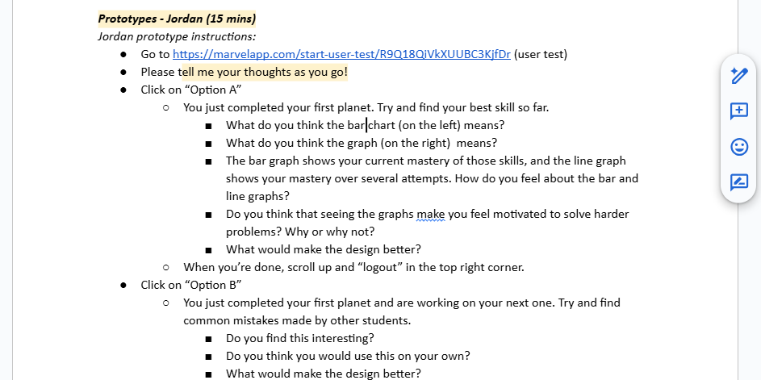

Lynnette Dashboard

Human-Computer Interaction Researcher
Context
The existing literature on educational dashboards indicated a lack of study on the effects of learning analytics dashboards on students. I sought to design a motivating dashboard for middle school students learning algebra using the existing Lynnette platform. My central research question was: what specific mechanisms do middle school students find motivating in an algebra learning dashboard?
Action
I began with a literature review of educational dashboards and the Lynnette platform, which informed the creation of a test protocol for interviewing middle school students. Additionally, I developed mid-fidelity prototypes in Marvel to test specific motivational mechanisms, including bar/line graphs and a "Recommendations" feature for common mistakes.

Result
I conducted interviews with eight middle school participants. Analysis of this data revealed:
- The “space” theme was popular.
- Graphs were understood, and students felt that seeing their progress was motivating.
- The "common mistakes" feature was met with ambivalence.
- Students desired visual hints and resources, such as supplementary videos or worked-out examples when struggling; it should be explored whether these belong in the dashboard or elsewhere in the application.
I presented these preliminary findings to the CMU Human-Computer Interaction Institute and incorporated what I learned into a new Figma prototype that was later built upon by other researchers in the lab.